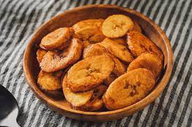

Dodo

Description
The sweetest prepared form of plantain
Ingredients
- Plantain
- Groundnut Oil
- Salt
Steps
- Peel the Plantain and cut into small sizes
- Pour salt into the peeled and cut plantain,then mix
- Pour Groundnut Oil in a Frying Pan
- Drop the plantain into the frying pan the fry